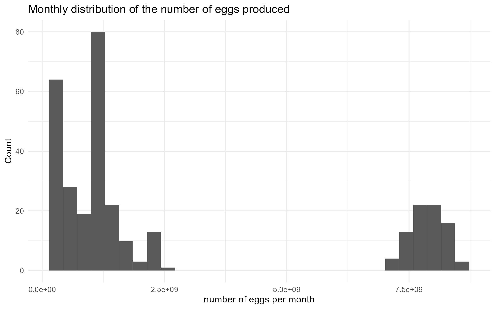
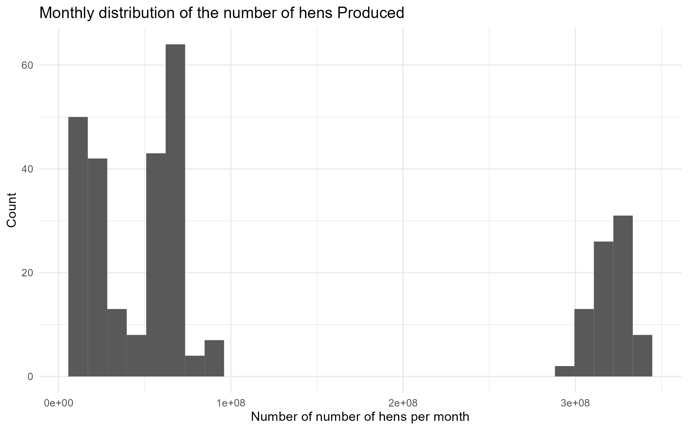
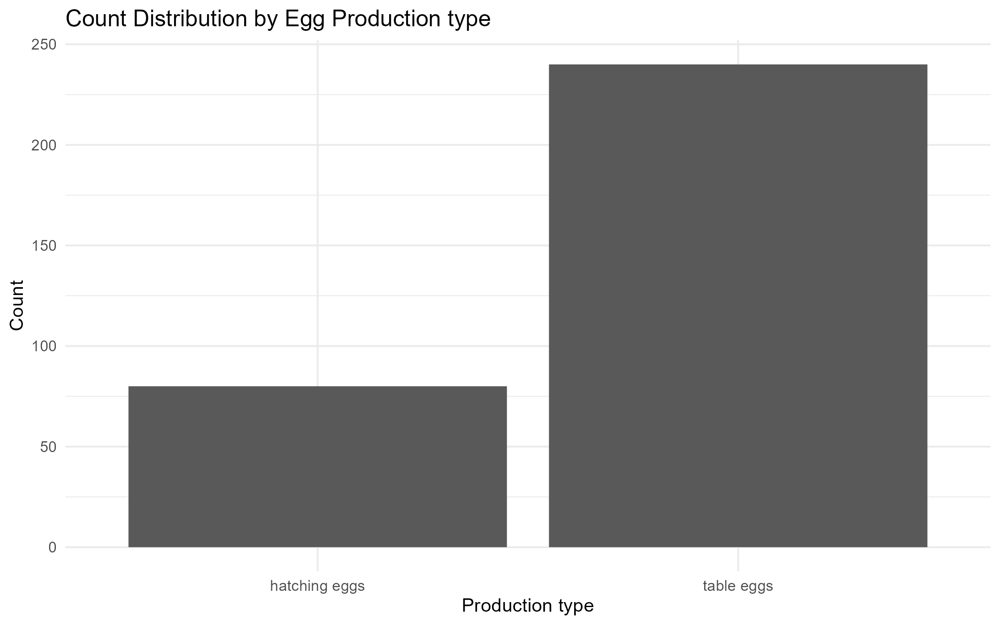
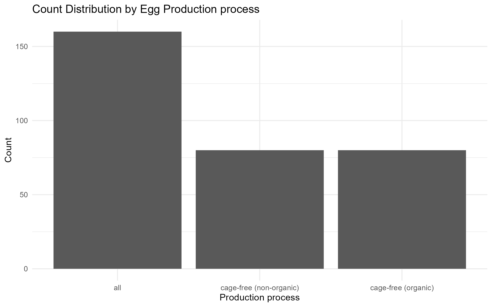
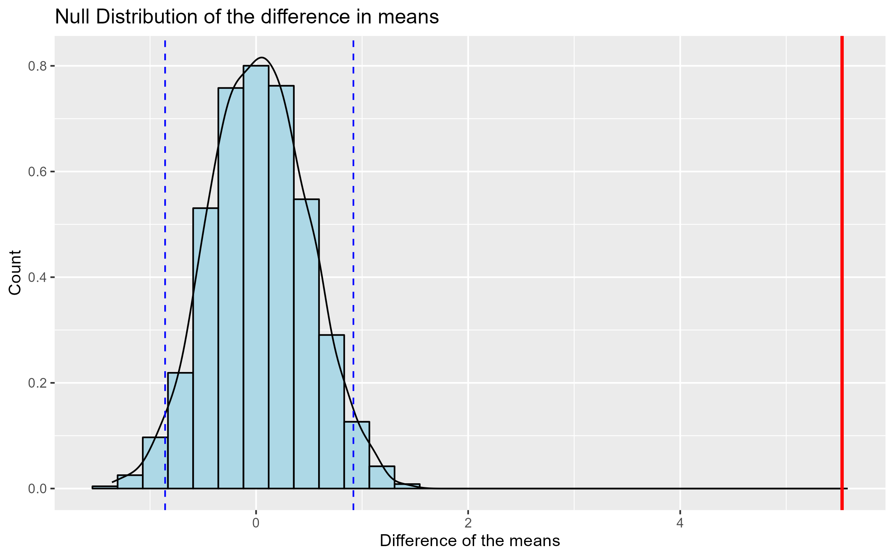

observed_month prod_type prod_process n_hens
Min. :2016-07-31 Length:320 Length:320 Min. : 13500000
1st Qu.:2018-03-31 Class :character Class :character 1st Qu.: 18174767
Median :2019-11-30 Mode :character Mode :character Median : 62135000
Mean :2019-11-30 Mean :114593880
3rd Qu.:2021-07-31 3rd Qu.:299541500
Max. :2023-03-31 Max. :341166000
NA's :9
n_eggs source
Min. :2.981e+08 Length:320
1st Qu.:4.739e+08 Class :character
Median :1.206e+09 Mode :character
Mean :2.701e+09
3rd Qu.:3.677e+09
Max. :8.601e+09
DSCI 522 Milestone 3
Inferential Analysis for Egg Production
Summary
This analysis aims to determine whether there is a difference in the mean number of eggs produced per hen between table eggs (i.e. unfertilized eggs for consumption) and hatching eggs (i.e. fertilized and will produce a chicken). The data used in this analysis was reported monthly from July 2016 to February of 2023 and was limited to the product type “all” as this includes both conventionally housed and cage-free eggs produced in the United States of America. We conducted a 1000 sample permutation to test our null-hypothesis with an observed test statistic of 5.527 and a p-value of 0. Using a significance level of 0.05 we rejected the null hypothesis in favour of the alternative and concluded that there is a significant difference in the mean number of eggs produced per hen between table and hatching eggs.
Introduction
Eggs and poultry products continue to be a staple in the modern diet (Conrad et al. 2017). Although the proportion of U.S. population consuming eggs remains steady, as the population grows the increase in demand for egg products requires larger yields from farmers (Conrad et al. 2017). Therefore, it is important for members of the egg industry to remain up to date on current egg yields, so that they can make informed economic decisions and continue to supply the population with egg products.
In this analysis we specifically look at the difference in table eggs and hatching eggs. Table eggs are unfertilized eggs that are used for consumption, whereas hatching eggs have been fertilized and will develop into chickens. Comparison of these two egg types can inform farmers on how best to approach their farming practices, as different egg types will require disparate processing strategies with individual costs and market prices (Stemberger 1959).
Methods
Data
The data used in this analysis was taken from the tidytuesday repository (Community 2023) and was originally sourced from Open Science Framework by Samara Mendez (Mendez 2023). Each row in the dataset represents summary data for the month, reporting on the type of egg (table vs hatching), the production process (conventional, cage-free, organic), the number of hens, the number of eggs and the source of the data.
Analysis
The number of eggs per hen was calculated from the given data by dividing the total number of eggs produced in each category for the month by the number of hens. This gives a more accurate representation of how many eggs are produced for each group, since the total number of eggs will depend on the number of hens. We then calculated the observed test statistic, difference of the means, and generated a null distribution through a 1000 repetition permutation simulation. From this simulated null distribution we calculated the p-value for our observed test statistic. The R programming language (R Core Team 2023)] and the following packages were used to conduct the analysis: dplyr (Wickham et al. 2023), readr (Wickham, Hester, and Bryan 2023), infer (Couch et al. 2021) and ggplot2 (Wickham 2016).
Result & Discussion
EDA
Step 1: Looking at the first and last few rows of the data. Finding the column data types and the NA values if any.
| observed_month | prod_type | prod_process | n_hens | n_eggs | source |
|---|---|---|---|---|---|
| 2016-07-31 | hatching eggs | all | 57975000 | 1147000000 | ChicEggs-09-23-2016.pdf |
| 2016-08-31 | hatching eggs | all | 57595000 | 1142700000 | ChicEggs-10-21-2016.pdf |
| 2016-09-30 | hatching eggs | all | 57161000 | 1093300000 | ChicEggs-11-22-2016.pdf |
| 2016-10-31 | hatching eggs | all | 56857000 | 1126700000 | ChicEggs-12-23-2016.pdf |
| 2016-11-30 | hatching eggs | all | 57116000 | 1096600000 | ChicEggs-01-24-2017.pdf |
| 2016-12-31 | hatching eggs | all | 57750000 | 1132900000 | ChicEggs-02-28-2017.pdf |
Table 2. EDA - First Few Rows
| observed_month | prod_type | prod_process | n_hens | n_eggs | source |
|---|---|---|---|---|---|
| 2022-10-31 | table eggs | cage-free (organic) | 17984833 | 462870566 | PY20221101MCAGEFREE.PDF |
| 2022-11-30 | table eggs | cage-free (organic) | 17984833 | 449033143 | PY20221201MCAGEFREE.PDF |
| 2022-12-31 | table eggs | cage-free (organic) | 18034386 | 467549794 | PY20230103MCAGEFREE.PDF |
| 2023-01-31 | table eggs | cage-free (organic) | 17464318 | 448923754 | PY20230201MCAGEFREE.PDF |
| 2023-02-28 | table eggs | cage-free (organic) | 16748968 | 384588000 | PY20230301MCAGEFREE.PDF |
| 2023-03-31 | table eggs | cage-free (organic) | 17558594 | 445822869 | PY20230403MCAGEFREE.PDF |
Table 3. EDA - Last Few Rows
| x |
|---|
| 320 |
Table 4. EDA - Number of Rows
The source column should not be in the data frame for the analysis. n_hens and n_eggs are both numerical data types where as prod_type and prod_process are categorical data types. We can also take note that the n_hens has 9 NA values. The observed month gives us the time frame of when the data was recorded. We can also see that we have a relatively low number of rows: 320.
Step 2: Visualize the distribution of both n_hens and n_eggs columns as well as the correlation between them.


We can see it is hard to determine a specific shape of the distributions but this is expected because we have a relatively small sample size. We also see that both distributions are somewhat similar. The correlation between the 2 variables is high at 0.9979883 meaning there is likely some strong relation between n_hens and n_eggs.
Step 3: Visualize the distribution of both prod_type and prod_process.


In our data we have a higher production of tables eggs than hatching eggs. Regarding the processes we have much more all process than other kinds of process and about the same count for the cage-free organic vs non organic.
Research Question and Hypotheses
We aimed to investigate whether there is a difference in the average number of eggs produced by each hen between hatching eggs and table eggs. To address this question, we formulated the following hypotheses:
\(H_{0}\): The mean number of eggs produced by each hen for hatching, \(\mu_{hatching}\), is equal to the mean number of eggs produced by each hen for table eggs, \(\mu_{table}\). Mathematically, \(\mu_{hatching} = \mu_{table}\).
\(H_{A}\): The mean number of eggs produced by each hen for hatching, \(\mu_{hatching}\), is NOT equal to the mean number of eggs produced by each hen for table eggs, \(\mu_{table}\). Mathematically, \(\mu_{hatching} \ne \mu_{table}\).
where \(\mu_{hatching}\) represents the population mean number of eggs produced by each hen for hatching, and \(\mu_{table}\) represents the population mean number of eggs produced by each hen for table eggs.
These hypotheses guided our analysis to determine whether a statistically significant difference exists in egg production between hatching eggs and table eggs.
Observed Test Statistic
To test these hypotheses, we calculated the observed test statistic \(\delta^{*}\), which represents the difference between the observed mean number of eggs produced by each hen for hatching eggs and the observed mean number of eggs produced by each hen for table eggs, as derived from our egg production dataset.
The observed test statistic \(\delta^{*}\) = \(\hat{\mu}_\text{hatching} - \hat{\mu}_\text{table}\)
Hypothesis Test Using the Permutation Method
With these hypotheses and observed test statistic in place, we could conduct our hypothesis test using the permutation method to draw conclusions about the potential differences in egg production between the two types.
In our data wrangling phase, we calculated the mean number of eggs produced per hen, recognizing that the total number of eggs depends on the number of hens involved.
Additionally, it is important to note that the “cage-free” production process is only applicable to table eggs, not hatching eggs. To ensure an fair and accurate comparison between hatching and table eggs, we filtered the dataset to include only entries where the “prod_process” variable was labeled as “all”.
Subsequently, we proceeded to analyze the data by computing a test statistic, that would allow us to assess the difference in egg production between hatching and table eggs, with careful consideration of handling any missing values (NA).
| prod_type | n | n_egg_by_hen |
|---|---|---|
| hatching eggs | 80 | 19.05066 |
| table eggs | 80 | 24.57723 |
Table 5.Summary of Number of Egg produced per hen by production
| x |
|---|
| 5.526568 |
Table 6.Test Statistics for the two sample means
With the test statistic in hand, we can conduct our hypothesis test using the permutation method. Our approach involved generating a null distribution through 1,000 permutations, simulating the expected outcome assuming there were no difference in egg production between the two types.
| p_value |
|---|
| 0 |
Table 7.P-value for Hypotheses Test
The p-value obtained from our hypothesis test is 0, which is an extremely rare occurrence. Given that our defined significance threshold \(\alpha\) is 0.05, we can reject the null hypothesis \(H_{0}\)(there is no difference in the average number of eggs produced by each hen between hatching eggs and table eggs) in favor of the alternative hypothesis \(H_{A}\).
Results Visualization

We’ve created a visualization to further illustrate our earlier conclusion. The red vertical line on the plot represents our observed test statistic obtained from our data, which lies within the rejection region as marked by the blue dashed lines. It demonstrates that our observed test statistic would be highly unlikely to occur under the null hypothesis.
Implications and Future Research Directions
In practical terms, this means that hatching eggs and table eggs do indeed exhibit distinct patterns of egg production by each hen. It suggests that tailoring production strategies for these two egg types may be necessary to optimize yields and meet consumer demands efficiently.
Looking ahead, our research paves the way for future investigations. One promising direction is to explore the effects of different production processes on table eggs. Understanding how variations in processing methods have influence on table egg production could offer valuable insights for both the egg industry and consumers.
References
Community, R4DS Online Learning. 2023. “Tidy Tuesday: A Weekly Social Data Project.” https://github.com/rfordatascience/tidytuesday.
Conrad, Zach, LuAnn K Johnson, James N Roemmich, WenYen Juan, and Lisa Jahns. 2017. “Time Trends and Patterns of Reported Egg Consumption in the US by Sociodemographic Characteristics.” Nutrients 9 (4): 333.
Couch, Simon P., Andrew P. Bray, Chester Ismay, Evgeni Chasnovski, Benjamin S. Baumer, and Mine Çetinkaya-Rundel. 2021. “infer: An R Package for Tidyverse-Friendly Statistical Inference.” Journal of Open Source Software 6 (65): 3661. https://doi.org/10.21105/joss.03661.
Mendez, S. 2023. “US Egg Production Data Set.” Open Science Framework. https://osf.io/z2gxn/.
R Core Team. 2023. R: A Language and Environment for Statistical Computing. Vienna, Austria: R Foundation for Statistical Computing. https://www.R-project.org/.
Stemberger, AP. 1959. “Economic Factors to Consider in Choosing Hatching Versus Table Eggs.” Poultry Science 38 (4): 799–803.
Wickham, Hadley. 2016. Ggplot2: Elegant Graphics for Data Analysis. Springer-Verlag New York. https://ggplot2.tidyverse.org.
Wickham, Hadley, Romain François, Lionel Henry, Kirill Müller, and Davis Vaughan. 2023. Dplyr: A Grammar of Data Manipulation. https://CRAN.R-project.org/package=dplyr.
Wickham, Hadley, Jim Hester, and Jennifer Bryan. 2023. Readr: Read Rectangular Text Data. https://CRAN.R-project.org/package=readr.